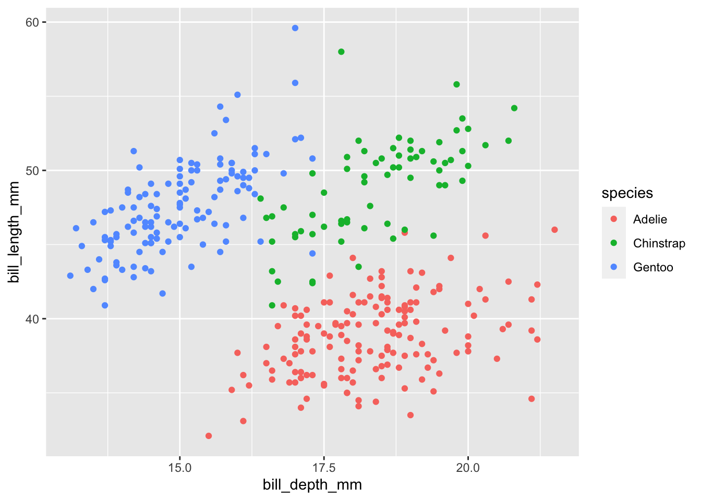

library(readr)
library(dplyr)
library(palmerpenguins)
library(ggplot2)Application Exercise 6 - Data import and exploration
Exercise 1: Data import
- Follow along with the live coding on the screen.
Stored locally as a CSV
Waste Characterization Data, Abidjan, Cote d’Ivoire,
The data in this exercise come from a study undertaken in Abidjan, Cote d’Ivore (Waste2Worth Innovations 2020). The data is stored in the sub-folder “raw_data” within the “data” folder. We are using functions of the readr R Package to import the data into our script.
library(readr)
waste_data <- read_csv(file = "data/raw_data/abidjan-waste-characterization.csv")# Data exploration
waste_data# A tibble: 2,080 × 4
Date Sample Category `mass (kg)`
<chr> <chr> <chr> <dbl>
1 23-Feb 23-A1 Food/Organic 36.5
2 23-Feb 23-B1 Food/Organic 65.0
3 23-Feb 23-A2 Food/Organic 62.4
4 23-Feb 23-B2 Food/Organic 72.6
5 23-Feb 23-A3 Food/Organic 88.6
6 23-Feb 23-B3 Food/Organic 69.1
7 23-Feb 23-A4 Food/Organic 66.0
8 23-Feb 23-B4 Food/Organic 89.6
9 23-Feb 23-A5 Food/Organic 53.9
10 23-Feb 23-B5 Food/Organic 67.5
# … with 2,070 more rowsglimpse(waste_data)Rows: 2,080
Columns: 4
$ Date <chr> "23-Feb", "23-Feb", "23-Feb", "23-Feb", "23-Feb", "23-Feb"…
$ Sample <chr> "23-A1", "23-B1", "23-A2", "23-B2", "23-A3", "23-B3", "23-…
$ Category <chr> "Food/Organic", "Food/Organic", "Food/Organic", "Food/Orga…
$ `mass (kg)` <dbl> 36.52, 65.04, 62.42, 72.60, 88.56, 69.14, 65.98, 89.58, 53…str(waste_data)spec_tbl_df [2,080 × 4] (S3: spec_tbl_df/tbl_df/tbl/data.frame)
$ Date : chr [1:2080] "23-Feb" "23-Feb" "23-Feb" "23-Feb" ...
$ Sample : chr [1:2080] "23-A1" "23-B1" "23-A2" "23-B2" ...
$ Category : chr [1:2080] "Food/Organic" "Food/Organic" "Food/Organic" "Food/Organic" ...
$ mass (kg): num [1:2080] 36.5 65 62.4 72.6 88.6 ...
- attr(*, "spec")=
.. cols(
.. Date = col_character(),
.. Sample = col_character(),
.. Category = col_character(),
.. `mass (kg)` = col_double()
.. )
- attr(*, "problems")=<externalptr> nrow(waste_data)[1] 2080ncol(waste_data)[1] 4Stored in a R data package
Palmer Penguins
Size measurements for adult foraging penguins near Palmer Station, Antarctica.
library(palmerpenguins)
penguins# A tibble: 344 × 8
species island bill_length_mm bill_depth_mm flipper_length_mm body_mass_g
<fct> <fct> <dbl> <dbl> <int> <int>
1 Adelie Torgersen 39.1 18.7 181 3750
2 Adelie Torgersen 39.5 17.4 186 3800
3 Adelie Torgersen 40.3 18 195 3250
4 Adelie Torgersen NA NA NA NA
5 Adelie Torgersen 36.7 19.3 193 3450
6 Adelie Torgersen 39.3 20.6 190 3650
7 Adelie Torgersen 38.9 17.8 181 3625
8 Adelie Torgersen 39.2 19.6 195 4675
9 Adelie Torgersen 34.1 18.1 193 3475
10 Adelie Torgersen 42 20.2 190 4250
# … with 334 more rows, and 2 more variables: sex <fct>, year <int>glimpse(penguins)Rows: 344
Columns: 8
$ species <fct> Adelie, Adelie, Adelie, Adelie, Adelie, Adelie, Adel…
$ island <fct> Torgersen, Torgersen, Torgersen, Torgersen, Torgerse…
$ bill_length_mm <dbl> 39.1, 39.5, 40.3, NA, 36.7, 39.3, 38.9, 39.2, 34.1, …
$ bill_depth_mm <dbl> 18.7, 17.4, 18.0, NA, 19.3, 20.6, 17.8, 19.6, 18.1, …
$ flipper_length_mm <int> 181, 186, 195, NA, 193, 190, 181, 195, 193, 190, 186…
$ body_mass_g <int> 3750, 3800, 3250, NA, 3450, 3650, 3625, 4675, 3475, …
$ sex <fct> male, female, female, NA, female, male, female, male…
$ year <int> 2007, 2007, 2007, 2007, 2007, 2007, 2007, 2007, 2007…?penguinsData cleaning
Waste Characterization Data, Abidjan, Cote d’Ivoire
Q: Which principles for data organisation in spreadsheets have the authors not followed?
- Principle 3: Choose Good Names for Things
- Principle 4: Write Dates as YYYY-MM-DD
library(dplyr)
waste_data_clean <- waste_data %>%
rename(Mass = `mass (kg)`) Exercise 2 : Data visualisation
Palmer penguins
Tasks
- Remove the hashtags to uncomment the lines in the code-chunk with the title “penguins-vis”.
- Run the code that is contained in the code-chunk.
library(ggplot2)
ggplot(data = penguins,
mapping = aes(x = bill_depth_mm,
y = bill_length_mm,
color = species)) +
geom_point()
Waste data
Fill in the blanks
ggplot(data = ___,
mapping = aes(x = Category,
y = Mass)) +
geom_col() +
coord_flip() References
References
Waste2Worth Innovations. 2020. “Abidjan, Cote d’ivoire, Waste Characterization Data, Feb-Mar 2018.” Zenodo. https://doi.org/10.5281/ZENODO.4012764.